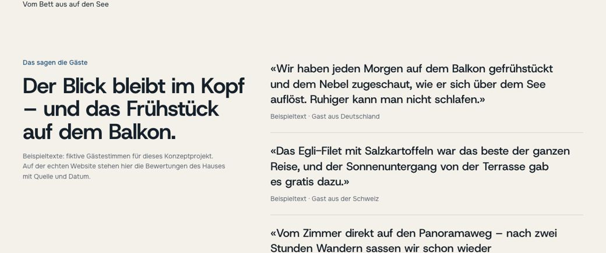

Ratgeber · Hotels
Hotelauslastung erhöhen: 6 Hebel, die Sie selbst in der Hand haben
Warum ist das Nachbarhotel voller? Dafür gibt es zwei Gründe: Entweder ist es dort für vergleichbares Budget objektiv komfortabler — oder die Nachbarn können besser vermitteln, was sie bieten. Der erste Grund kostet Umbau und Jahre. Der zweite besteht aus sechs Hebeln, die Sie selbst bedienen können. Der Reihe nach.
Hebel 1: Die Website steuert die Erwartungen
Sie geben alles, damit der Aufenthalt unvergesslich wird — aber potenzielle Gäste sehen nicht Ihren Service, sie sehen Ihre Website. Meist kommen sie mit drei Fragen:
Ein Zimmer buchen
- Preis mit Portalen vergleichen
- freie Termine prüfen
- Zimmerkategorien verstehen
Bedingungen prüfen
- Gibt es Parkplätze?
- Echte Zimmerfotos
- Wie ist das Frühstück?
Restaurant
- Passen die Öffnungszeiten?
- Muss man reservieren?
- Dürfen externe Gäste essen?
Beantwortet die Website diese Fragen in Sekunden, erfüllt sie Wünsche vor der Buchung — das entscheidet, ob der Gast bleibt. Und sie darf ehrlich aussortieren: Eine falsche Erwartung ist eine schlechte Bewertung mit Zeitverzögerung.
Hebel 2: Direktbuchung möglich machen
In unseren 28 Audits konnten Gäste bei 26 Häusern auf der Website weder buchen noch freie Termine sehen. Jede dieser Buchungen läuft über Portale — mit 12–18 % Provision. Was konkret zu tun ist, steht Schritt für Schritt in „Warum Gäste nicht auf der Hotel-Website buchen“.
Hebel 3: Bewertungen zeigen, die Sie längst haben
Bei 22 von 28 Häusern stand keine einzige Bewertung auf der Website — bei Bewertungen von 8,3 bis 9,6 und Hunderten Stimmen auf Booking. Ein Audit-Beispiel: 643 Bewertungen mit 8,9 auf Booking — und null auf der eigenen Website. Der Gast, der zweifelt, bekommt die Bestätigung dort, wo die Provision wartet. Holen Sie die besten Stimmen auf Ihre Website — mit Quelle und Datum.

Hebel 4: Das Google-Profil arbeiten lassen
Bei 16 von 28 Häusern führt Google den Gast, der das Hotel beim Namen sucht, zu den Portalen: Die Karte zeigt „Verfügbarkeit prüfen“ — und listet nur Booking und Agoda. Pflegen Sie das Google-Unternehmensprofil: identische Zeiten und Telefonnummern wie auf der Website, eigene Fotos, und der Buchungslink zeigt auf Ihre Website. Ihr wärmster Gast — der Sie bereits beim Namen sucht — gehört Ihnen, nicht dem Portal.
Hebel 5: Die Nebensaison braucht einen Anlass
Leere Novemberwochen füllt kein Rabatt, sondern ein Grund zu kommen: das Spa-Wochenende mit Sauna und Massage, das Paket zum lokalen Weinfest, „4 Nächte bleiben, 3 zahlen“ für Langzeitgäste. Ein Anlass mit klarem Namen, Preis und Zeitraum — prominent auf der Startseite, nicht in einem PDF-Prospekt.
Hebel 6: Gäste zurückholen, statt neue zu kaufen
Der günstigste Gast ist der, der schon einmal da war: Für ihn zahlen Sie weder Portal noch Werbung. Dafür braucht es zwei Dinge — seine E-Mail-Adresse (die Ihnen bei der Direktbuchung gehört, beim Portal nicht) und einen Grund wiederzukommen. Welche Vorteile wenig kosten und viel bewirken: „Direktbucher-Vorteile“.
Checkliste für diese Woche
- 1
Website vom Handy öffnen, wie ein Gast: Sind Buchung, Parken, Frühstück, Fotos in 10 Sekunden zu finden?
- 2
Google-Profil prüfen: Zeiten, Telefon, Fotos, Buchungslink — alles identisch mit der Website?
- 3
Die drei besten Bewertungen auf die Startseite — mit Quelle und Datum.
- 4
Einen Nebensaison-Anlass benennen: Name, Preis, Zeitraum, Platz auf der Startseite.
- 5
Prüfen, ob ein Gast direkt buchen kann — und ob ein Grund genannt ist, es zu tun.
Häufige Fragen
Womit fange ich an, wenn alles gleichzeitig wichtig ist?
Mit der Website vom Handy aus, wie ein Gast: Ist in 10 Sekunden klar, was für ein Haus das ist und wie man bucht? Danach Google-Profil und Bewertungen — diese drei Hebel kosten am wenigsten und wirken am schnellsten.
Wir sind auf Booking gut gebucht — reicht das nicht?
Booking bringt Gäste, nimmt aber nach unseren Audits 12–18 % pro Nacht — auch von Stammgästen. Jeder Hebel, der Gäste in die Direktbuchung führt, senkt diese Kosten dauerhaft.
Wie schnell wirken diese Hebel?
Hinweise wie „Sofortige Bestätigung“, ein gepflegtes Google-Profil und sichtbare Bewertungen wirken in Tagen. Eine neue Buchungsstrecke in Wochen. Pakete für die Nebensaison — zur nächsten Saison.
Was, wenn das Hotel „nicht für alle“ ist?
Zeigen Sie es ehrlich: Eine Website, die den „falschen“ Gast aussortiert, erspart Ihnen schlechte Bewertungen. Eine falsche Erwartung ist schlimmer als eine ausgebliebene Buchung.
Kostenloses Website-Audit für Ihr Haus
Wir prüfen Ihre Website so gründlich wie die 28 Häuser in unserer Statistik — und zeigen, was zuerst zu beheben ist.
- Audit mit konkreten Punkten — keine allgemeinen Ratschläge
- Kostenlose Konzept-Vorschau: so kann Ihre Website aussehen
- 30 Minuten Gespräch — unverbindlich


Weiterlesen
 Direktbuchung
DirektbuchungWarum Gäste nicht auf der Hotel-Website buchen
Fünf Ängste, fünf Schritte, Referenz-Zimmerkarte, Daten aus 28 Audits.
Lesen → Gästebindung
GästebindungDirektbucher-Vorteile: kosten wenig, wirken viel
Mit Kosten-Nutzen-Tabelle und Auswahl nach Haustyp.
Lesen → Checkliste
ChecklisteWas auf eine Hotel-Website gehört: die komplette Checkliste
Vom ersten Bildschirm bis Impressum — zum Abhaken.
Lesen → Systeme
SystemeBuchungssysteme für Hotels: welches wofür — und was es kostet
IBE, Channel-Manager, PMS — mit Preisen und Rechenbeispiel.
Lesen → Immobilien
ImmobilienWebsite für Bauträger: Vertrauen verkaufen, bevor gebaut ist
Renderings, Wohnungsfinder, Baufortschritt, Antworten 24/7.
Lesen → Restaurants
RestaurantsRestaurant-Website: Reservierungen ohne Provision
Speisekarte als Seite, Reservierung mit zwei Klicks.
Lesen →